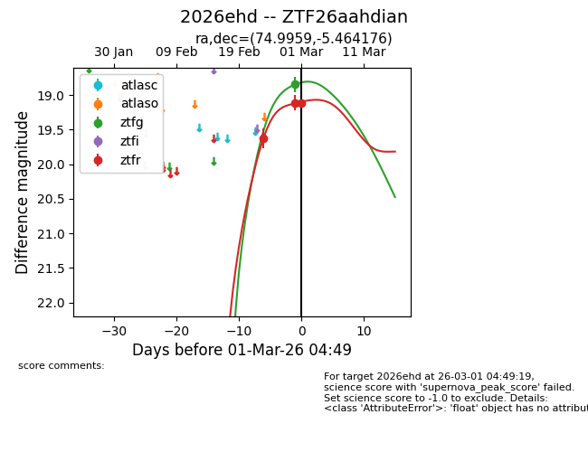
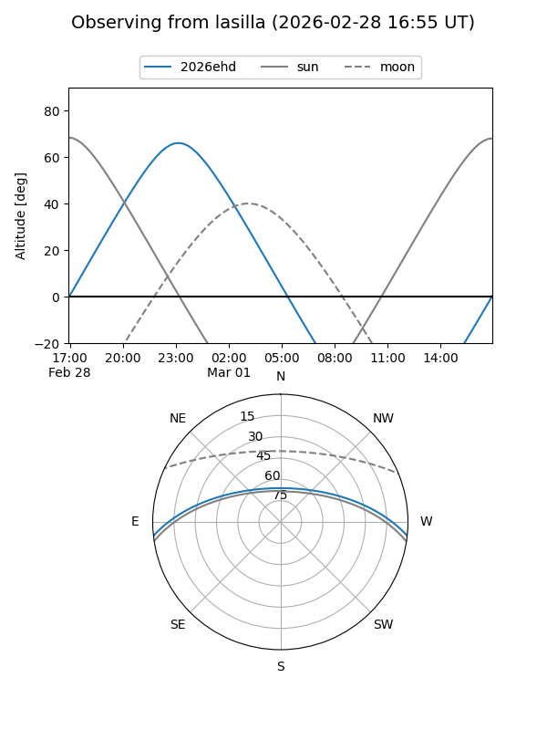
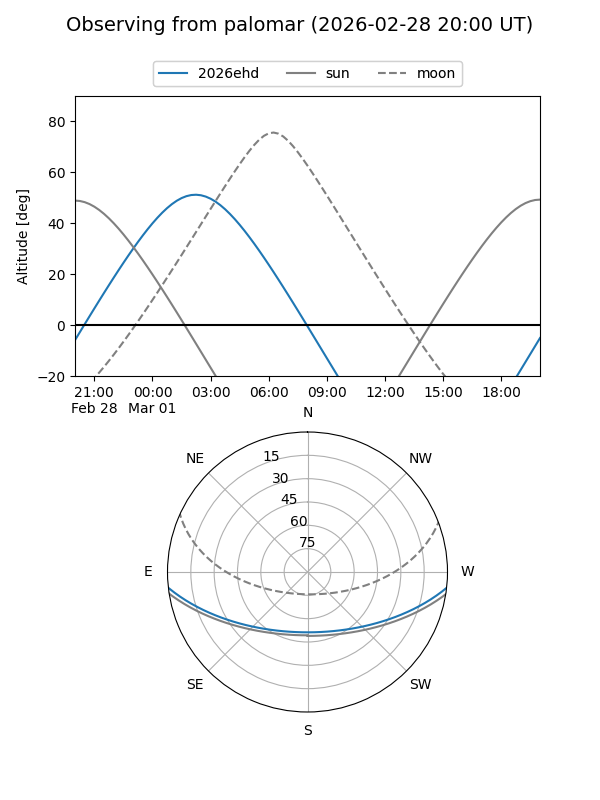
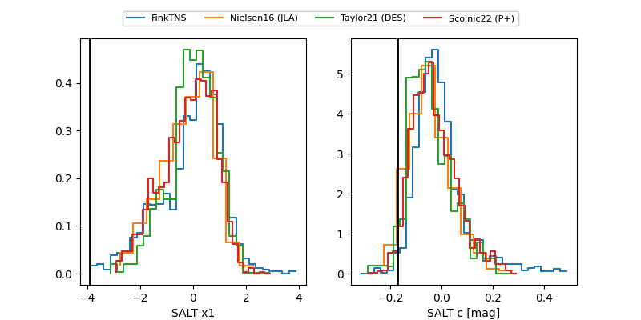

2026ehd
Target 2026ehd at 2026-03-01 04:50
Aliases and brokers:
FINK: link
Lasair: link
ALeRCE: link
TNS: link
YSE: link
alt names
ZTF26aahdian (ztf,fink_ztf)
2026ehd (tns,yse)
Coordinates:
equatorial (ra, dec) = 74.9959,-5.46418
equatorial (HMS+DMS) = 04:59:59.02,-05:27:51.03
galactic (l, b) = (204.6950,-27.22472)
Flags:
Photometry:
last ztfg=18.85, ztfr=19.12
1 ztfg, 3 ztfr detections
Lightcurve

Visibility


Additional plots
